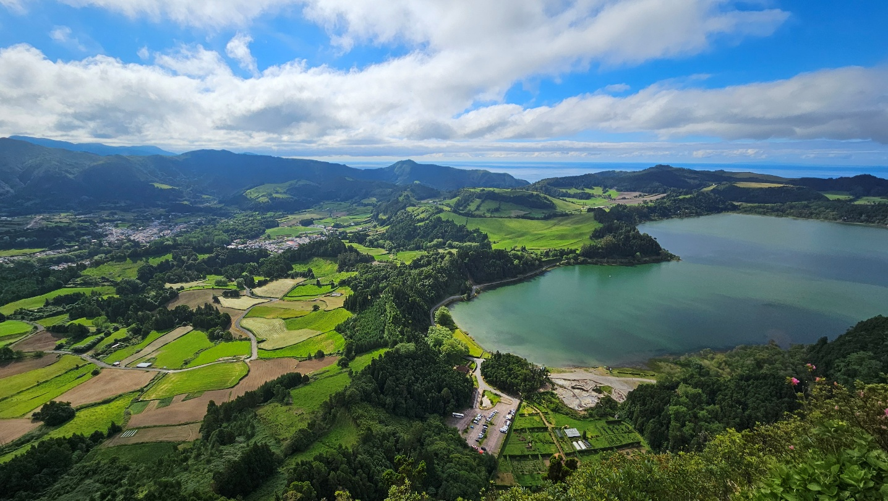

Z cest
São Miguel: co bych dnes objel za šest dní
Na São Miguel jsem se dostal třikrát. Dvakrát v roce 2021 — v červenci a v polovině listopadu — a naposledy v červnu 2024. Pokaždé na týden, pokaždé jen na tenhle jeden ostrov.
To, co je dole, není deník z první cesty. Je to trasa, jak ji mám poskládanou dnes, po třech pokusech, plus věci, které jsem se naučil až tím, že jsem tam byl znovu.
Azory, nebo Madeira?
Před tou první cestou jsme byli týden na Madeiře a odletěli sotva týden nato na Azory. Bylo to shodou okolností, ale ukázalo se, že je to nejlepší možné pořadí.
Kdybych si měl vybrat ostrov, kde budu trávit důchod, vyhrávají Azory — a to i v rámci celé Evropy. Mají daleko lepší dopravu: nejsou tak kopcovité, za chvíli jste z jedné strany na druhou a řízení je o hodně pohodovější. Teplota je stabilnější, kolem dvaceti stupňů po celý rok s odchylkou pár stupňů, a to včetně nocí. A kupodivu se tam dá líp koupat, mají písečné pláže.
Kopce a levády na Madeiře jsou ale parádní.
Spojit oba ostrovy v jednom termínu je fakt dobrá volba, a v tomhle pořadí: nejdřív Madeira, pak Azory. Na Madeiře pochodíte, co se dá, a na Azorech se pak vyhřejete v sopečných pramenech. Z Funchalu do Ponta Delgady létá přímý let — dnes asi deset spojů týdně s Azores Airlines a cesta trvá dvě hodiny — takže se to dá celé stihnout během deseti dnů. Od května 2026 navíc létá Madeira i na Terceiru, kdyby vás lákalo přidat ještě jeden azorský ostrov.
Kdy jet
Viděl jsem ostrov v červenci, v listopadu a v červnu, takže k tomuhle můžu říct něco konkrétního.
Červenec byl kupodivu nejhorší z těch tří. Na vyhlídce Boca do Inferno bylo hodně lidí a k tomu mlha. U termálů se stály fronty. Kilo ananasu stálo osm eur.
Listopad byl zjevení. Na Boca do Inferno jsme kolem desáté dopoledne byli úplně sami. U vyhlídky na opuštěný hotel minimum lidí. U termálů klid. Ananas za tři eura. A počasí paradoxně vycházelo líp než v létě.
Červen je rozumný kompromis, pokud nechcete riskovat listopadové srážky.
O jezeře Lagoa do Fogo se říká, že když z webkamer zjistíte, že je bez mlhy, máte všeho nechat a okamžitě tam vyrazit. V červenci to fakt tak bylo. V listopadu bylo skoro pořád v pohodě.
Co se za tři roky změnilo
Tohle je asi nejužitečnější část článku, protože v žádném starším cestopise to nenajdete. Ceny a otevírací doby níže jsou ověřené k srpnu 2026 — zkušenost z posledních let ale říká, že se před cestou hodí znovu podívat na stránky konkrétního místa.
Termály zdražily zhruba na dvojnásobek. Bazénky Poça da Dona Beija ve Furnas stály v roce 2021 šest eur na hodinu a půl, v roce 2024 osm a dnes dvanáct do půl šesté odpoledne, po šesté šestnáct. Caldeira Velha osm eur, o tři roky později deset. A Terra Nostra, největší skok, z osmi eur na šestnáct, dnes sedmnáct — zato už bez omezení na tři hodiny.
A hlavně se všude začalo rezervovat dopředu. V roce 2021 se prostě přišlo. Dnes je u Caldeiry Velhy potřeba objednat online aspoň dva až tři dny předem — a na daný den už online nekoupíte nic. U bazénků Dona Beija ve Furnas je dnes online prodej dokonce jediná možnost a vstupenka je nevratná. Otevírací doba se u nich mimochodem posunula na oba konce — otevírají už v půl deváté ráno a zavírají až v jedenáct večer.
Pozor na jednu věc, která platila vždycky: časy jsou pevně dané. Když přijdete později, než začíná váš turnus, máte to o to kratší za stejné peníze.

Program na šest dní
Ubytovaní jsme byli u Ponta Delgady, odkud je to na většinu míst do půl hodiny. Trasy jsou stavěné tak, aby se každý den jelo jedním směrem.
1. den — severní pobřeží
Čajovna Chá do Porto Formoso. Vodopád Cascata da Ribeira — je to umělé údolí, ale moc pěkné. Údolí s Cascata do Risco a pivo v Café Tavares.
Pláž Praia dos Moinhos a k ní procházka údolím k vodopádu. To údolí je přes cestu naproti pláži, nikdo tam nechodí a stačí na něj dvacet minut.
Vyhlídky Santa Iria a Ponta do Cintrão.
2. den — jezera a termály
Lagoa do Fogo — hned ráno, dokud je jasno. A dnes to platí dvojnásob: od 15. června do 30. září je silnice od Caldeiry Velhy k Casa da Água pro turistická auta uzavřená mezi devátou ráno a sedmou večer. Buď tam tedy vyrazíte před devátou, nebo zaparkujete u Caldeiry Velhy či u Casa da Água a dojedete kyvadlovým busem za pět eur na osobu — jezdí systémem hop-on hop-off a jízdenka platí celý den. Mimo uvedené hodiny se dá vyjet vlastním autem jako dřív.
Caldeira Velha, termální bazény. Deset eur, turnus hodinu a půl, nutná rezervace online. A pozor na jednu věc: na daný den se online koupit nedá vůbec — prodej končí ve 23.59 předchozího dne. Pak už zůstává jen pokladna na místě, pokud něco zbylo, a v sezóně bývá vyprodáno i několik dní dopředu.
Vodopád Salto do Cabrito. Pokud si troufnete, sjeďte až na spodní parkoviště, ušetříte velký kopec. I mimo sezónu tam bývá dost lidí.
Ribeira Grande — z Ponta Delgady jste tam přes kopec za patnáct minut. Ochutnávka likérů Mulher de Capote.
Pláž Praia do Areal de Santa Bárbara.
3. den — západní pobřeží
Obrostlý viadukt u Parque de Estacionamento a ještě jeden kousek dál. Pěkné fotky, a když je mlha, ještě lepší.
Boca do Inferno — must see, ale chce to pěkné počasí.
Miradouro da Vista do Rei u opuštěného hotelu. Přímo od vyhlídky je to kvůli stromům vidět hůř — vraťte se kousek podél cesty zpět, odtud je to lepší.
Čajovna dole u jezera. V úterý má zavřeno, což jsme zjistili až na místě.
Mosteiros a bar u moře s výhledem. Termal Ferraria, místo, kde se mísí horký pramen s oceánem — tady je zásadní příliv a odliv. Při přílivu se nedá pořádně koupat a převažuje studená voda.
Zpátky po pobřeží.
4. den — Furnas
Miradouro do Pico do Ferro — na jezero Furnas shora.
Termální bazénky Poça da Dona Beija, menší než Terra Nostra, hodina a půl za dvanáct eur do půl šesté odpoledne a za šestnáct po šesté, otevřeno od půl deváté do jedenácti večer s posledním vstupem v půl desáté. Vstupenky se dnes prodávají výhradně online a nedá se je zrušit ani vyměnit — rozmyslete si to před kliknutím.
Nebo Terra Nostra — větší a s parkem, sedmnáct eur, otevřeno 10.30 až 16.30 a uvnitř už žádný časový limit — zůstat můžete až do zavíračky. Vstupenky se dá koupit jen na patnáct dní dopředu. Za mě spíš Terra Nostra: ten park je pěkný a do menších termálů se vejde fakt hodně lidí.
Cozido je potřeba objednat dopředu. Restaurace Tony, otevřeno dvanáct až šestnáct, objednává se v baru hned vedle. Jedna porce je určitě pro dva, klidně i pro tři. Ideální postup: objednat, jít se vykoupat a vrátit se na oběd.
U jezera stojí za to kostel, platany a prameny, ve kterých se cozido opravdu vaří v zemi.
Po cestě zpátky Ilhéu da Vila, ostrůvek ve tvaru velryby s mořským okem uprostřed, a křížová cesta Ermida de Nossa Senhora da Paz.
5. den — východ ostrova
Miradouro do Pico dos Bodes. Vodopád Cascata do Salto do Prego. Pláž Praia do Lombo Gordo.
Miradouro da Ponta do Sossego — nádherný parčík s vyhlídkou, za mě nejhezčí místo na téhle straně ostrova. Miradouro da Vista dos Barcos. Maják Farol do Arnel.
Nordeste a čajovna Gorreana.
K čajovnám jedna poznámka: dají se v nich koupit čaje, ale ty samé čaje a další místní výrobky, likéry a vynikající sýry se dají koupit přímo v Ponta Delgadě v obchodě The King of Cheese, a všechno levněji.
6. den — jih a město
Ananasová plantáž kousek od Ponta Delgady.
Piscina de Caloura, mořský bazén. Fábrica da Cidade.
Ponta Delgada — sem se dá zajet kdykoliv, když máte chvilku. Je tu i nákupní centrum s jídelním koutem, kde se dá dobře a levně najíst.
Tajný tip
Sever ostrova, vesnice Achadinha. Sjeďte z hlavní silnice směrem k moři, kolem zapomenutého baru, kde stojí pivo eurodvacet a terasa s parádní vyhlídkou, a sejděte po asfaltové cestě dolů.
Je tam nádherné údolí s vodopádem. Údolím vyjdete kolem Poço Azul zase nahoru k baru na zasloužené pivo.
Za tři návštěvy tam nikdo nebyl.
Kde jíst
Michel Restaurant v Ponta Delgadě. Byli jsme tam za ty cesty dohromady tolikrát, že se stydím to počítat. Tuňák je prostě fenomenální a další jídla stojí taky za to. Rezervujte předem, v roce 2024 už to bez toho nešlo.
Cozido u Furnas viz čtvrtý den — je to zážitek spíš než gastronomie, ale ujít se to nemá.
Na tržišti v Ponta Delgadě mají moje nejoblíbenější ovoce, maracuju. Nebojte se, když bude nevzhledná a krabatá, i tak je vynikající. Jejich ananas je fakt skvělý. A v supermarketu mají výborné víno, na dražší lahve bývá velká sleva.
Náklady
Poslední cesta, červen 2024, osm dní, jeli jsme v pěti.
Vyšlo to na 14 500 Kč na osobu. V tom jsou letenky s Lufthansou z Katowic přes Frankfurt, apartmán přes Airbnb, půjčené auto na celý pobyt, parkování v Katowicích a benzín. Jídlo, vstupy a termály v tom nejsou — na ty si připočtěte podle sebe. Od ledna 2025 navíc platí na São Miguelu ve všech šesti obcích turistická taxa: dvě eura za osobu a noc od třinácti let, maximálně za tři noci, takže nejvýš šest eur na osobu za celý pobyt. Platí se na místě v ubytování.
Za ty peníze týden na atlantickém ostrově s autem a vlastním apartmánem. Právě proto se vyplatí jezdit ve víc lidech — auto, apartmán ani benzín se s počtem osob nenásobí.
Auto bylo Renault Clio od Gorentacar za 305 eur. Poznámka pro ty, kdo rádi rezervují dopředu a pak přehodnocují: původní půjčovnu jsem rušil a stálo mě to tisícovku. Vyplatí se hlídat, do kdy jde rezervaci zrušit zdarma — u téhle to bylo čtrnáct dní před příjezdem.